01
Non-subject preservation
Is everything outside the edit left alone?
LPIPS ↓
Computed with the dilated target region masked out.
Built for multi-shot editing in real production workflows. Cinematic scenes, from one lone character to a crowded ensemble, where every edit has to find the right subject after each cut and look the same every time that subject comes back.
Each video tells its own story, keeping its space, time and characters consistent across 4–6 shots. They range from a single character to crowded, mixed human–animal scenes, and from photoreal footage to stylized media.
Each video comes with two edit instructions. Local edits (add, remove, appearance change, swap) target a character, an animal or an object. Global edits change the environment or the style of the whole scene.
V2V
Text-guided editing
Input: the source video and the edit instruction.
IV2V
Edited-frame-guided propagation
Also gets one edited reference frame. Half use the first frame, half a later one.
Amber squares are local edits and teal squares are global edits. Click a square to play its source video.
Each dimension combines pixel-level metrics, embedding similarity and a VLM judge.
01
Is everything outside the edit left alone?
LPIPS ↓
Computed with the dilated target region masked out.
02
Is the edit applied only to the target, and to all of it?
Precision ↑Recall ↑
Precision penalizes changes to other subjects or to shots without the target. Recall penalizes partial edits.
03
Does the target keep everything that wasn't asked to change?
MFS ↑LPIPS ↓VLM ↑
MFS compares the target's motion, tracked with CoTracker3, within each shot.
04
Is it the same edit in every shot?
VLM ↑
The judge sees frames from all target-bearing shots together. It is scored separately from whether the edit is correct.
05
Does each shot match its target description?
CLIP ↑ViCLIP ↑VLM ↑
Every shot is scored, including shots that should stay unchanged.
06
Does it look like good video, regardless of the edit?
DINO ↑NIQE ↓PickScore ↑VLM ↑
Temporal coherence, no-reference image quality, and a 1–5 artifact rating.
07 IV2V only
Does the propagated edit stay true to the edited reference frame?
VLM ↑
Identity and attributes must match the reference, while pose, viewpoint and lighting can vary naturally.
★ Headline
In what fraction of frames did everything go right at once?
A frame counts only if every applicable VLM check passes, including full coverage and, for IV2V, fidelity to the reference frame.
In both text-guided and edited-frame-guided editing, MoviEdit shows balanced strength across every dimension of the benchmark.
Bold best · underline second best · ↑ higher is better · ↓ lower is better
Everything you need to run the benchmark is here. Hover a card to step through its shots, and click to play it. Switch to IV2V to see the edited reference frame for each instruction.
Setting
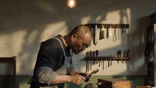
→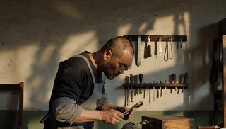
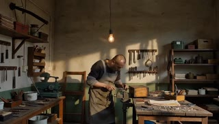
→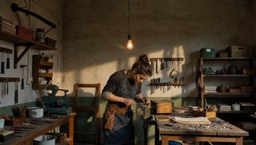
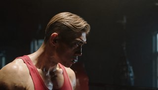
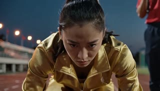
→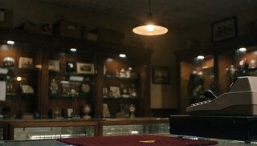
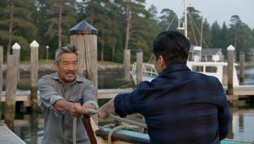
→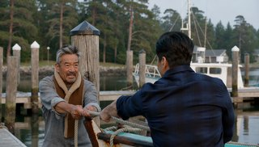
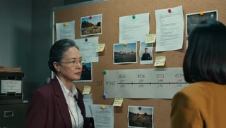
→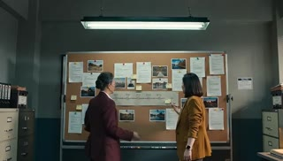
→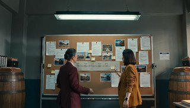
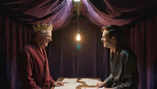
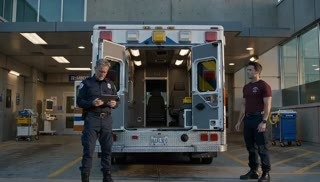
→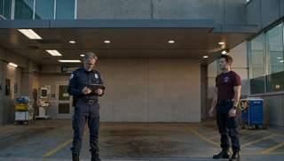
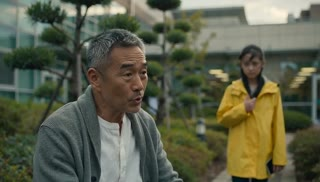
→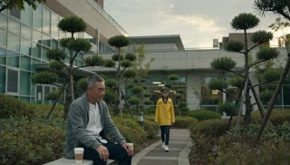
→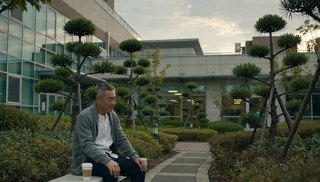
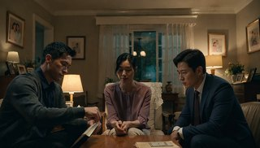
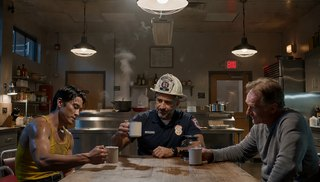
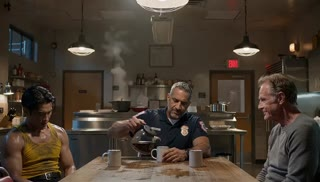
→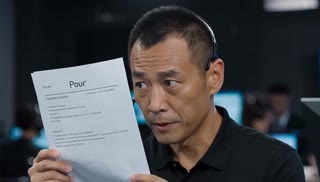
→ →
→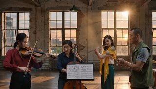
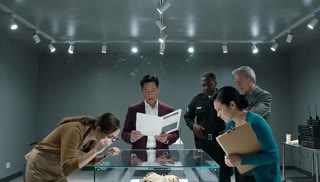
→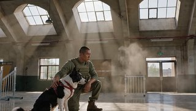
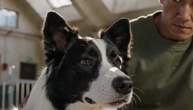
→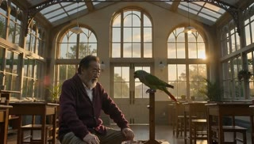
→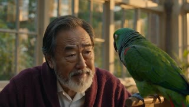
→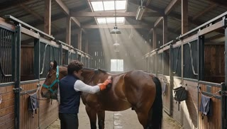
→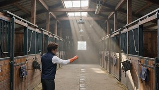
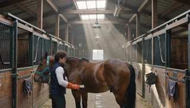
→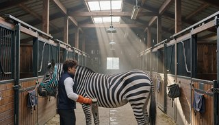
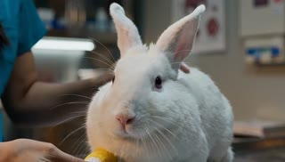
→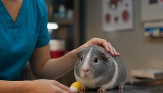
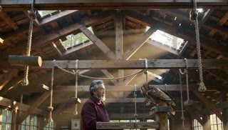
→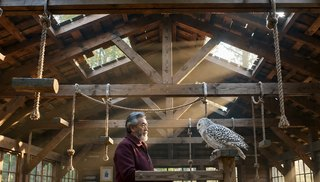
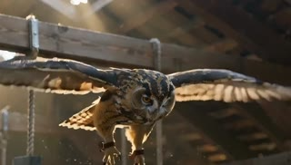
→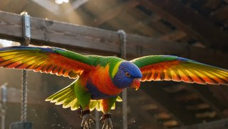
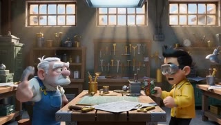
→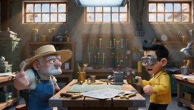
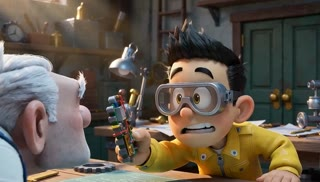
→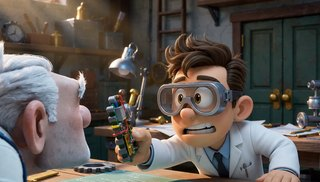
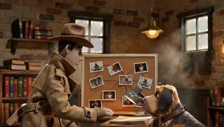
→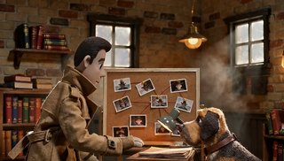
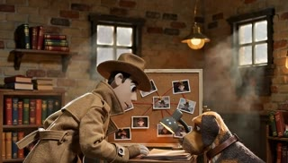
→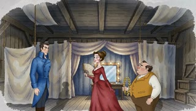
→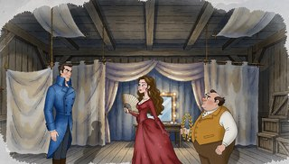
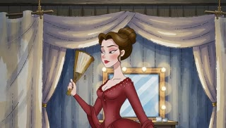
→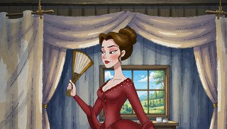
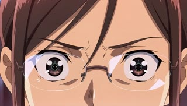
→| instruction_id | Category | Task | Edit instruction | Source video | IV2V ref frame | Edited frame |
|---|---|---|---|---|---|---|
| C1_4_A__remove__01 | C1 | Remove | Remove the man | C1_4_A_shots4_dur15_seed43_1280x720_0e18129eab.mp4 | 88 | C1_4_A__remove__01_f88.png |
| C1_4_A__appearance_change__01 | C1 | Appearance change | Change the appearance of the rose bush to match a golden-yellow rose bush | C1_4_A_shots4_dur15_seed43_1280x720_0e18129eab.mp4 | 312 | C1_4_A__appearance_change__01_f312.png |
| C1_4_B__add__01 | C1 | Add | Add an ivory opera cape with a crimson lining to the man. | C1_4_B_shots4_dur15_seed42_1280x720_9e7c6552b6.mp4 | 0 | C1_4_B__add__01_f0.png |
| C1_4_B__appearance_change__01 | C1 | Appearance change | Change the appearance of the man to match a midnight-blue tailcoat with a white boutonniere | C1_4_B_shots4_dur15_seed42_1280x720_9e7c6552b6.mp4 | 0 | C1_4_B__appearance_change__01_f0.png |
| C1_5_A__add__01 | C1 | Add | Add an ivory lace collar with pearl-beaded trim to the woman | C1_5_A_shots5_dur15_seed42_1280x720_dd0dd666c4.mp4 | 0 | C1_5_A__add__01_f0.png |
| C1_5_A__swap__01 | C1 | Swap | Replace the woman with another woman in a deep burgundy velvet performance gown with long sleeves | C1_5_A_shots5_dur15_seed42_1280x720_dd0dd666c4.mp4 | 0 | C1_5_A__swap__01_f0.png |
| C1_5_B__remove__01 | C1 | Remove | Remove the light bulb | C1_5_B_shots5_dur15_seed42_1280x720_9e7497e747.mp4 | 128 | C1_5_B__remove__01_f128.png |
| C1_5_B__swap__01 | C1 | Swap | Replace the man with another woman in an indigo denim work apron with a leather tool belt | C1_5_B_shots5_dur15_seed42_1280x720_9e7497e747.mp4 | 0 | C1_5_B__swap__01_f0.png |
| C1_6_A__appearance_change__01 | C1 | Appearance change | Change the appearance of the man to match a neat, gentlemanly blonde hairstyle with a natural side part and medium-short length hairstyle | C1_6_A_shots6_dur15_seed42_1280x720_12fd859853.mp4 | 264 | C1_6_A__appearance_change__01_f264.png |
| C1_6_A__swap__01 | C1 | Swap | Replace the hand wraps with a pair of cobalt-blue leather boxing gloves with white laces | C1_6_A_shots6_dur15_seed42_1280x720_12fd859853.mp4 | 136 | C1_6_A__swap__01_f136.png |
| C1_6_B__add__01 | C1 | Add | Add a wide-brimmed olive canvas bucket hat to the woman | C1_6_B_shots6_dur15_seed42_1280x720_73220b69e7.mp4 | 312 | C1_6_B__add__01_f312.png |
| C1_6_B__remove__01 | C1 | Remove | Remove the woman | C1_6_B_shots6_dur15_seed42_1280x720_73220b69e7.mp4 | 0 | C1_6_B__remove__01_f0.png |
| C2_4_A__appearance_change__01 | C2 | Appearance change | Change the appearance of the running track to match a green grass lawn | C2_4_A_shots4_dur15_seed42_1280x720_45947d7376.mp4 | 0 | C2_4_A__appearance_change__01_f0.png |
| C2_4_A__swap__01 | C2 | Swap | Replace the woman wearing a gold tracksuit with another woman wearing an emerald green satin blouse | C2_4_A_shots4_dur15_seed42_1280x720_45947d7376.mp4 | 152 | C2_4_A__swap__01_f152.png |
| C2_4_B__add__01 | C2 | Add | Add a charcoal blazer to the man in white shirt | C2_4_B_shots4_dur15_seed42_1280x720_b79677b694.mp4 | 0 | C2_4_B__add__01_f0.png |
| C2_4_B__remove__01 | C2 | Remove | Remove the woman in black blazer | C2_4_B_shots4_dur15_seed42_1280x720_b79677b694.mp4 | 272 | C2_4_B__remove__01_f272.png |
| C2_5_A__add__01 | C2 | Add | Add a brown tweed flat cap to the man in brown overcoat. | C2_5_A_shots5_dur15_seed42_1280x720_36dba07b39.mp4 | 0 | C2_5_A__add__01_f0.png |
| C2_5_A__appearance_change__01 | C2 | Appearance change | Change the appearance of the woman in the black coat and red scarf to match a sapphire-blue wrap dress. | C2_5_A_shots5_dur15_seed42_1280x720_36dba07b39.mp4 | 208 | C2_5_A__appearance_change__01_f208.png |
| C2_5_B__remove__01 | C2 | Remove | Remove the wooden door | C2_5_B_shots5_dur15_seed44_1280x720_7014602963.mp4 | 256 | C2_5_B__remove__01_f256.png |
| C2_5_B__swap__01 | C2 | Swap | Replace the woman in the navy blazer with another woman in a pink suit with a silk blouse | C2_5_B_shots5_dur15_seed44_1280x720_7014602963.mp4 | 0 | C2_5_B__swap__01_f0.png |
| C2_6_A__remove__01 | C2 | Remove | Remove the man in maroon cardigan | C2_6_A_shots6_dur15_seed42_1280x720_07038a8cab.mp4 | 320 | C2_6_A__remove__01_f320.png |
| C2_6_A__appearance_change__01 | C2 | Appearance change | Change the appearance of the cash register to match brushed stainless steel | C2_6_A_shots6_dur15_seed42_1280x720_07038a8cab.mp4 | 0 | C2_6_A__appearance_change__01_f0.png |
| C2_6_B__add__01 | C2 | Add | Add a quilted burnt-orange flight jacket to the woman in navy shirt | C2_6_B_shots6_dur15_seed42_1280x720_acf73acfae.mp4 | 0 | C2_6_B__add__01_f0.png |
| C2_6_B__swap__01 | C2 | Swap | Replace the man in gray jacket with another woman in a firefighter's uniform | C2_6_B_shots6_dur15_seed42_1280x720_acf73acfae.mp4 | 328 | C2_6_B__swap__01_f328.png |
| C3A_4_A__remove__01 | C3A | Remove | Remove the woman in crimson blazer | C3A_4_A_shots4_dur15_seed42_1280x720_691ec293ed.mp4 | 176 | C3A_4_A__remove__01_f176.png |
| C3A_4_A__appearance_change__01 | C3A | Appearance change | Change the appearance of the red-tabbed binder to match a vivid lime cover | C3A_4_A_shots4_dur15_seed42_1280x720_691ec293ed.mp4 | 0 | C3A_4_A__appearance_change__01_f0.png |
| C3A_4_B__add__01 | C3A | Add | Add an amber shearling neck wrap to the man in a gray flannel shirt. | C3A_4_B_shots4_dur15_seed43_1280x720_05cb4e50a7.mp4 | 144 | C3A_4_B__add__01_f144.png |
| C3A_4_B__swap__01 | C3A | Swap | Replace the man in a navy flannel shirt with another man in a brown leather jacket. | C3A_4_B_shots4_dur15_seed43_1280x720_05cb4e50a7.mp4 | 0 | C3A_4_B__swap__01_f0.png |
| C3A_5_A__appearance_change__01 | C3A | Appearance change | Change the appearance of the woman in burgundy blazer to match a man | C3A_5_A_shots5_dur15_seed42_1280x720_90ed83a488.mp4 | 224 | C3A_5_A__appearance_change__01_f224.png |
| C3A_5_A__swap__01 | C3A | Swap | Replace the metal cabinets with wooden barrels | C3A_5_A_shots5_dur15_seed42_1280x720_90ed83a488.mp4 | 0 | C3A_5_A__swap__01_f0.png |
| C3A_5_B__add__01 | C3A | Add | Add a gold velvet crown to the man in a wine-red robe | C3A_5_B_shots5_dur15_seed42_1280x720_76df8be03c.mp4 | 312 | C3A_5_B__add__01_f312.png |
| C3A_5_B__appearance_change__01 | C3A | Appearance change | Change the appearance of the man in a charcoal robe to match a mustard hoodie | C3A_5_B_shots5_dur15_seed42_1280x720_76df8be03c.mp4 | 0 | C3A_5_B__appearance_change__01_f0.png |
| C3A_6_A__add__01 | C3A | Add | Add a pearl necklace with a lace collar to the woman in an ivory gown | C3A_6_A_shots6_dur15_seed42_1280x720_7155877aff.mp4 | 96 | C3A_6_A__add__01_f96.png |
| C3A_6_A__remove__01 | C3A | Remove | Remove the woman in dusty-rose dress | C3A_6_A_shots6_dur15_seed42_1280x720_7155877aff.mp4 | 0 | C3A_6_A__remove__01_f0.png |
| C3A_6_B__remove__01 | C3A | Remove | Remove the ambulance and its door | C3A_6_B_shots6_dur15_seed42_1280x720_292e708b89.mp4 | 0 | C3A_6_B__remove__01_f0.png |
| C3A_6_B__swap__01 | C3A | Swap | Replace the gray-haired man in a navy uniform shirt with another woman in a green EMT uniform | C3A_6_B_shots6_dur15_seed42_1280x720_292e708b89.mp4 | 144 | C3A_6_B__swap__01_f144.png |
| C3B_4_A__remove__01 | C3B | Remove | Remove the man in navy suit | C3B_4_A_shots4_dur15_seed42_1280x720_e478861703.mp4 | 152 | C3B_4_A__remove__01_f152.png |
| C3B_4_A__appearance_change__01 | C3B | Appearance change | Change the appearance of the wooden desk to match a white marble finish | C3B_4_A_shots4_dur15_seed42_1280x720_e478861703.mp4 | 0 | C3B_4_A__appearance_change__01_f0.png |
| C3B_4_B__add__01 | C3B | Add | Add a reflective neon-yellow safety vest with silver piping to the woman in navy uniform | C3B_4_B_shots4_dur15_seed42_1280x720_a5f1c74b1b.mp4 | 152 | C3B_4_B__add__01_f152.png |
| C3B_4_B__swap__01 | C3B | Swap | Replace the man in a tan trench coat with another woman in a turquoise dress | C3B_4_B_shots4_dur15_seed42_1280x720_a5f1c74b1b.mp4 | 0 | C3B_4_B__swap__01_f0.png |
| C3B_5_A__add__01 | C3B | Add | Add wide-brimmed charcoal felt fedora with a leather band to the woman in a black leather jacket | C3B_5_A_shots5_dur15_seed42_1280x720_3514f19cc9.mp4 | 264 | C3B_5_A__add__01_f264.png |
| C3B_5_A__appearance_change__01 | C3B | Appearance change | Change the appearance of the man in a long burgundy coat to match long blond wavy hair | C3B_5_A_shots5_dur15_seed42_1280x720_3514f19cc9.mp4 | 0 | C3B_5_A__appearance_change__01_f0.png |
| C3B_5_B__add__01 | C3B | Add | Add a crimson-and-cobalt plaid scarf to the man in grey cardigan | C3B_5_B_shots5_dur15_seed42_1280x720_c035cc532a.mp4 | 96 | C3B_5_B__add__01_f96.png |
| C3B_5_B__remove__01 | C3B | Remove | Remove the girl in yellow raincoat | C3B_5_B_shots5_dur15_seed42_1280x720_c035cc532a.mp4 | 0 | C3B_5_B__remove__01_f0.png |
| C3B_6_A__appearance_change__01 | C3B | Appearance change | Change the appearance of the man in white jacket to match a black chef's coat | C3B_6_A_shots6_dur15_seed46_1280x720_08d20585fb.mp4 | 0 | C3B_6_A__appearance_change__01_f0.png |
| C3B_6_A__swap__01 | C3B | Swap | Replace the stainless steel tongs with a wooden spoon | C3B_6_A_shots6_dur15_seed46_1280x720_08d20585fb.mp4 | 264 | C3B_6_A__swap__01_f264.png |
| C3B_6_B__remove__01 | C3B | Remove | Remove the white desk lamp | C3B_6_B_shots6_dur15_seed43_1280x720_9befac7b21.mp4 | 144 | C3B_6_B__remove__01_f144.png |
| C3B_6_B__swap__01 | C3B | Swap | Replace the man in blue cardigan with another man in a brown corduroy jacket with reading glasses | C3B_6_B_shots6_dur15_seed43_1280x720_9befac7b21.mp4 | 0 | C3B_6_B__swap__01_f0.png |
| C4_4_A__appearance_change__01 | C4 | Appearance change | Change the appearance of the man in a charcoal cardigan to match a camel overcoat | C4_4_A_shots4_dur15_seed42_1280x720_889a66727c.mp4 | 128 | C4_4_A__appearance_change__01_f128.png |
| C4_4_A__swap__01 | C4 | Swap | Replace the man in rust flannel shirt with another male lawyer in a blue suit | C4_4_A_shots4_dur15_seed42_1280x720_889a66727c.mp4 | 0 | C4_4_A__swap__01_f0.png |
| C4_4_B__add__01 | C4 | Add | Add bright red over-ear headphones to the man in a blue shirt | C4_4_B_shots4_dur15_seed42_1280x720_783b918675.mp4 | 152 | C4_4_B__add__01_f152.png |
| C4_4_B__remove__01 | C4 | Remove | Remove the woman in green cardigan | C4_4_B_shots4_dur15_seed42_1280x720_783b918675.mp4 | 0 | C4_4_B__remove__01_f0.png |
| C4_5_A__add__01 | C4 | Add | Add a mustard scarf with a floral border to the woman in a navy cardigan | C4_5_A_shots5_dur15_seed42_1280x720_4b68c49c99.mp4 | 256 | C4_5_A__add__01_f256.png |
| C4_5_A__swap__01 | C4 | Swap | Replace the woman in coral blouse with another man in a charcoal suit with a burgundy tie | C4_5_A_shots5_dur15_seed42_1280x720_4b68c49c99.mp4 | 0 | C4_5_A__swap__01_f0.png |
| C4_5_B__add__01 | C4 | Add | Add a white fire helmet with a reflective badge to the man in the navy uniform | C4_5_B_shots5_dur15_seed42_1280x720_e425d689ca.mp4 | 320 | C4_5_B__add__01_f320.png |
| C4_5_B__appearance_change__01 | C4 | Appearance change | Change the appearance of the man in a yellow undershirt to match a navy blue cashmere turtleneck sweater | C4_5_B_shots5_dur15_seed42_1280x720_e425d689ca.mp4 | 0 | C4_5_B__appearance_change__01_f0.png |
| C4_6_A__remove__01 | C4 | Remove | Remove the man in navy suit | C4_6_A_shots6_dur15_seed42_1280x720_c6ff1c1069.mp4 | 0 | C4_6_A__remove__01_f0.png |
| C4_6_A__appearance_change__01 | C4 | Appearance change | Change the appearance of the paper to match a crumpled light-blue paper texture | C4_6_A_shots6_dur15_seed42_1280x720_c6ff1c1069.mp4 | 200 | C4_6_A__appearance_change__01_f200.png |
| C4_6_B__remove__01 | C4 | Remove | Remove the slung guitar | C4_6_B_shots6_dur15_seed42_1280x720_3355a6ee86.mp4 | 296 | C4_6_B__remove__01_f296.png |
| C4_6_B__swap__01 | C4 | Swap | Replace the man in a black leather jacket with another woman in a rust-brown suede jacket with a bolo tie | C4_6_B_shots6_dur15_seed42_1280x720_3355a6ee86.mp4 | 0 | C4_6_B__swap__01_f0.png |
| C5_4_A__remove__01 | C5 | Remove | Remove the man in navy blazer | C5_4_A_shots4_dur15_seed42_1280x720_bd748125a2.mp4 | 152 | C5_4_A__remove__01_f152.png |
| C5_4_A__appearance_change__01 | C5 | Appearance change | Change the appearance of the boxes in the background to match a wooden finish. | C5_4_A_shots4_dur15_seed42_1280x720_bd748125a2.mp4 | 0 | C5_4_A__appearance_change__01_f0.png |
| C5_4_B__remove__01 | C5 | Remove | Remove the white chef's hat | C5_4_B_shots4_dur15_seed42_1280x720_31530b9f08.mp4 | 152 | C5_4_B__remove__01_f152.png |
| C5_4_B__swap__01 | C5 | Swap | Replace the man in a black jacket with another man in a gray chef's coat with a black bandana. | C5_4_B_shots4_dur15_seed42_1280x720_31530b9f08.mp4 | 0 | C5_4_B__swap__01_f0.png |
| C5_5_A__add__01 | C5 | Add | Add a black lace collar with beaded trim to the woman in a red blouse | C5_5_A_shots5_dur15_seed42_1280x720_6636096170.mp4 | 0 | C5_5_A__add__01_f0.png |
| C5_5_A__appearance_change__01 | C5 | Appearance change | Change the appearance of the man in navy shirt to match a woman | C5_5_A_shots5_dur15_seed42_1280x720_6636096170.mp4 | 0 | C5_5_A__appearance_change__01_f0.png |
| C5_5_B__appearance_change__01 | C5 | Appearance change | Change the appearance of the man in a burgundy blazer to match a cobalt-blue dinner jacket | C5_5_B_shots5_dur15_seed42_1280x720_aef439f2bf.mp4 | 72 | C5_5_B__appearance_change__01_f72.png |
| C5_5_B__swap__01 | C5 | Swap | Replace the handheld radio with a ripe yellow banana | C5_5_B_shots5_dur15_seed42_1280x720_aef439f2bf.mp4 | 264 | C5_5_B__swap__01_f264.png |
| C5_6_A__add__01 | C5 | Add | Add safety goggles with a black strap to the man in a yellow safety vest and grey shirt | C5_6_A_shots6_dur15_seed43_1280x720_6f08987d5b.mp4 | 0 | C5_6_A__add__01_f0.png |
| C5_6_A__remove__01 | C5 | Remove | Remove the man in blue coverall | C5_6_A_shots6_dur15_seed43_1280x720_6f08987d5b.mp4 | 0 | C5_6_A__remove__01_f0.png |
| C5_6_B__add__01 | C5 | Add | Add a cream wool scarf to the man in an orange jacket | C5_6_B_shots6_dur15_seed42_1280x720_590b6e4e81.mp4 | 136 | C5_6_B__add__01_f136.png |
| C5_6_B__swap__01 | C5 | Swap | Replace the man in a khaki vest with another man in a red flannel work jacket with a tool pouch | C5_6_B_shots6_dur15_seed42_1280x720_590b6e4e81.mp4 | 104 | C5_6_B__swap__01_f104.png |
| C6_4_A__remove__01 | C6 | Remove | Remove the cat | C6_4_A_shots4_dur15_seed44_1280x720_3d9e02fc55.mp4 | 0 | C6_4_A__remove__01_f0.png |
| C6_4_A__swap__01 | C6 | Swap | Replace the cat with a fluffy gray-and-white Persian cat | C6_4_A_shots4_dur15_seed44_1280x720_3d9e02fc55.mp4 | 304 | C6_4_A__swap__01_f304.png |
| C6_4_B__add__01 | C6 | Add | Add a padded tactical utility vest in matte olive to the man | C6_4_B_shots4_dur15_seed42_1280x720_84e5ab61c7.mp4 | 0 | C6_4_B__add__01_f0.png |
| C6_4_B__remove__01 | C6 | Remove | Remove the dog | C6_4_B_shots4_dur15_seed42_1280x720_84e5ab61c7.mp4 | 248 | C6_4_B__remove__01_f248.png |
| C6_5_A__add__01 | C6 | Add | Add round amber-tinted glasses to the man | C6_5_A_shots5_dur15_seed42_1280x720_d363b23864.mp4 | 0 | C6_5_A__add__01_f0.png |
| C6_5_A__appearance_change__01 | C6 | Appearance change | Change the appearance of the parrot to match blue and yellow feathers | C6_5_A_shots5_dur15_seed42_1280x720_d363b23864.mp4 | 120 | C6_5_A__appearance_change__01_f120.png |
| C6_5_B__remove__01 | C6 | Remove | Remove the horse | C6_5_B_shots5_dur15_seed44_1280x720_5e5aea9680.mp4 | 0 | C6_5_B__remove__01_f0.png |
| C6_5_B__appearance_change__01 | C6 | Appearance change | Change the appearance of the horse to match a zebra | C6_5_B_shots5_dur15_seed44_1280x720_5e5aea9680.mp4 | 304 | C6_5_B__appearance_change__01_f304.png |
| C6_6_A__add__01 | C6 | Add | Add a clear plastic face shield with a crimson headband to the woman | C6_6_A_shots6_dur15_seed46_1280x720_02394f7906.mp4 | 0 | C6_6_A__add__01_f0.png |
| C6_6_A__swap__01 | C6 | Swap | Replace the rabbit with a small gray-and-white guinea pig | C6_6_A_shots6_dur15_seed46_1280x720_02394f7906.mp4 | 216 | C6_6_A__swap__01_f216.png |
| C6_6_B__appearance_change__01 | C6 | Appearance change | Change the appearance of the owl to match white-and-charcoal plumage | C6_6_B_shots6_dur15_seed42_1280x720_09062704f4.mp4 | 0 | C6_6_B__appearance_change__01_f0.png |
| C6_6_B__swap__01 | C6 | Swap | Replace the owl with a rainbow parrot | C6_6_B_shots6_dur15_seed42_1280x720_09062704f4.mp4 | 152 | C6_6_B__swap__01_f152.png |
| C7_4_B__add__01 | C7 | Add | Add a wide-brimmed straw sun hat with rustic frayed edges to the white-haired man in a blue apron | C7_4_B_shots4_dur15_seed44_1280x720_a963a6f4df.mp4 | 0 | C7_4_B__add__01_f0.png |
| C7_4_B__swap__01 | C7 | Swap | Replace the man in a yellow jacket with another man in a white lab coat | C7_4_B_shots4_dur15_seed44_1280x720_a963a6f4df.mp4 | 256 | C7_4_B__swap__01_f256.png |
| C7_4_C__remove__01 | C7 | Remove | Remove the felt fedora | C7_4_C_shots4_dur15_seed42_1280x720_9b5218b1a5.mp4 | 0 | C7_4_C__remove__01_f0.png |
| C7_4_C__swap__01 | C7 | Swap | Replace the man with a female puppet in a gray trench coat and hat | C7_4_C_shots4_dur15_seed42_1280x720_9b5218b1a5.mp4 | 88 | C7_4_C__swap__01_f88.png |
| C7_5_A__appearance_change__01 | C7 | Appearance change | Change the appearance of the woman to match long, wavy hair | C7_5_A_shots5_dur15_seed42_1280x720_3165f7ef20.mp4 | 0 | C7_5_A__appearance_change__01_f0.png |
| C7_5_A__swap__01 | C7 | Swap | Replace the mirror with a window | C7_5_A_shots5_dur15_seed42_1280x720_3165f7ef20.mp4 | 152 | C7_5_A__swap__01_f152.png |
| C7_5_B__remove__01 | C7 | Remove | Remove the woman in red apron | C7_5_B_shots5_dur15_seed42_1280x720_dda2cb68d0.mp4 | 0 | C7_5_B__remove__01_f0.png |
| C7_5_B__appearance_change__01 | C7 | Appearance change | Change the appearance of the white cake to match a chocolate cake | C7_5_B_shots5_dur15_seed42_1280x720_dda2cb68d0.mp4 | 0 | C7_5_B__appearance_change__01_f0.png |
| C7_6_A__add__01 | C7 | Add | Add teal blue wraparound sunglasses to the woman | C7_6_A_shots6_dur15_seed42_1280x720_1c0ae67f46.mp4 | 248 | C7_6_A__add__01_f248.png |
| C7_6_A__remove__01 | C7 | Remove | Remove the woman | C7_6_A_shots6_dur15_seed42_1280x720_1c0ae67f46.mp4 | 136 | C7_6_A__remove__01_f136.png |
| C7_6_C__add__01 | C7 | Add | Add a gold bow tie to the man in a red blazer | C7_6_C_shots6_dur15_seed43_1280x720_0de1261a3b.mp4 | 0 | C7_6_C__add__01_f0.png |
| C7_6_C__appearance_change__01 | C7 | Appearance change | Change the appearance of the woman in blue blazer to match an ivory blazer-dress | C7_6_C_shots6_dur15_seed43_1280x720_0de1261a3b.mp4 | 152 | C7_6_C__appearance_change__01_f152.png |
| C8_4_A__environment_change__01 | C8 | Environment change | Change the scene environment to torrential midnight rain with thick prominent rain lines and flickering cold overhead lighting | C8_4_A_shots4_dur15_seed42_1280x720_434016be13.mp4 | 0 | C8_4_A__environment_change__01_f0.png |
| C8_4_A__environment_change__02 | C8 | Environment change | Change the scene environment to an overall cooler, blue-toned color grade | C8_4_A_shots4_dur15_seed42_1280x720_434016be13.mp4 | 192 | C8_4_A__environment_change__02_f192.png |
| C8_4_B__stylization__01 | C8 | Stylization | Apply the style of watercolor painting — soft blended colors, visible brushstrokes, paper-like background texture to the entire scene | C8_4_B_shots4_dur15_seed42_1280x720_03b427615c.mp4 | 0 | C8_4_B__stylization__01_f0.png |
| C8_4_B__environment_change__01 | C8 | Environment change | Change the scene environment to vibrant neon-lit nightlife with electric purple and pink ambient glows | C8_4_B_shots4_dur15_seed42_1280x720_03b427615c.mp4 | 152 | C8_4_B__environment_change__01_f152.png |
| C8_4_C__stylization__01 | C8 | Stylization | Apply the style of crayon drawing — scribbled color fills, overlapping strokes, sketchy shading, wavy uneven outlines to the entire scene | C8_4_C_shots4_dur15_seed42_1280x720_347f659cdc.mp4 | 0 | C8_4_C__stylization__01_f0.png |
| C8_4_C__environment_change__01 | C8 | Environment change | Change the scene environment to dim theatrical lighting with an intense spotlight and deep surrounding shadows | C8_4_C_shots4_dur15_seed42_1280x720_347f659cdc.mp4 | 152 | C8_4_C__environment_change__01_f152.png |
| C8_5_A__environment_change__01 | C8 | Environment change | Change the scene environment to dense snowfall with large visible drifting snowflakes and a frozen wintry atmosphere | C8_5_A_shots5_dur15_seed43_1280x720_d7e7027e59.mp4 | 0 | C8_5_A__environment_change__01_f0.png |
| C8_5_A__environment_change__02 | C8 | Environment change | Change the scene environment to a high-contrast black-and-white color grade | C8_5_A_shots5_dur15_seed43_1280x720_d7e7027e59.mp4 | 256 | C8_5_A__environment_change__02_f256.png |
| C8_5_B__stylization__01 | C8 | Stylization | Apply the style of anime — bold flat colors with black outlines, simplified exaggerated features, smooth rounded shapes to the entire scene | C8_5_B_shots5_dur15_seed42_1280x720_29d9e4f535.mp4 | 152 | C8_5_B__stylization__01_f152.png |
| C8_5_B__environment_change__01 | C8 | Environment change | Change the scene environment to an overall warm amber/orange color temperature across the whole frame | C8_5_B_shots5_dur15_seed42_1280x720_29d9e4f535.mp4 | 0 | C8_5_B__environment_change__01_f0.png |
| C8_5_C__environment_change__01 | C8 | Environment change | Change the scene environment to thick autumnal morning fog with muted grey lighting and damped surfaces | C8_5_C_shots5_dur15_seed42_1280x720_85c59ce47a.mp4 | 0 | C8_5_C__environment_change__01_f0.png |
| C8_5_C__environment_change__02 | C8 | Environment change | Change the scene environment to golden hour warm light streaming through windows with visible dust motes | C8_5_C_shots5_dur15_seed42_1280x720_85c59ce47a.mp4 | 312 | C8_5_C__environment_change__02_f312.png |
| C8_6_A__stylization__01 | C8 | Stylization | Apply the style of pencil sketch — grayscale fine textured lines, shading depth, hand-drawn pencil strokes on white to the entire scene | C8_6_A_shots6_dur15_seed42_1280x720_bf15473097.mp4 | 264 | C8_6_A__stylization__01_f264.png |
| C8_6_A__environment_change__01 | C8 | Environment change | Change the scene environment to midday summer brilliance with harsh white sunlight and deep ink-black shadows | C8_6_A_shots6_dur15_seed42_1280x720_bf15473097.mp4 | 0 | C8_6_A__environment_change__01_f0.png |
| C8_6_B__environment_change__01 | C8 | Environment change | Change the scene environment to dim eerie nocturnal fog with cold bluish ambient light and dampened visibility | C8_6_B_shots6_dur15_seed42_1280x720_615b51e02c.mp4 | 0 | C8_6_B__environment_change__01_f0.png |
| C8_6_B__environment_change__02 | C8 | Environment change | Change the scene environment to muted overcast daylight with sterile gray light and diffused low-contrast illumination | C8_6_B_shots6_dur15_seed42_1280x720_615b51e02c.mp4 | 312 | C8_6_B__environment_change__02_f312.png |
| C8_4_D__stylization__01 | C8 | Stylization | Apply the style of watercolor painting — soft blended colors, visible brushstrokes, paper-like background texture to the entire scene | C8_4_D_shots4_dur15_seed45_1280x720_5a00400967.mp4 | 0 | C8_4_D__stylization__01_f0.png |
| C8_4_D__environment_change__01 | C8 | Environment change | Change the scene environment to a warm sepia tone | C8_4_D_shots4_dur15_seed45_1280x720_5a00400967.mp4 | 0 | C8_4_D__environment_change__01_f0.png |
| C8_4_E__environment_change__01 | C8 | Environment change | Change the scene environment to a heavy rainstorm | C8_4_E_shots4_dur15_seed49_1280x720_114c1eeefc.mp4 | 136 | C8_4_E__environment_change__01_f136.png |
| C8_4_E__environment_change__02 | C8 | Environment change | Change the scene environment to a single harsh spotlight | C8_4_E_shots4_dur15_seed49_1280x720_114c1eeefc.mp4 | 0 | C8_4_E__environment_change__02_f0.png |
| C8_4_F__stylization__01 | C8 | Stylization | Apply the style of paper cutout — layered angular paper shapes, visible edges, flat textured paper surfaces to the entire scene | C8_4_F_shots4_dur15_seed45_1280x720_ce327d34dc.mp4 | 0 | C8_4_F__stylization__01_f0.png |
| C8_4_F__environment_change__01 | C8 | Environment change | Change the scene environment to blue twilight dusk | C8_4_F_shots4_dur15_seed45_1280x720_ce327d34dc.mp4 | 168 | C8_4_F__environment_change__01_f168.png |
| C8_5_D__stylization__01 | C8 | Stylization | Apply the style of flat vector — solid colors, geometric shapes, no shadows, minimalist 2D appearance to the entire scene | C8_5_D_shots5_dur15_seed42_1280x720_62b391728f.mp4 | 256 | C8_5_D__stylization__01_f256.png |
| C8_5_D__environment_change__01 | C8 | Environment change | Change the scene environment to harsh silhouette lighting | C8_5_D_shots5_dur15_seed42_1280x720_62b391728f.mp4 | 0 | C8_5_D__environment_change__01_f0.png |
| C8_5_E__environment_change__01 | C8 | Environment change | Change the scene environment to early dawn light | C8_5_E_shots5_dur15_seed44_1280x720_fa132101fb.mp4 | 232 | C8_5_E__environment_change__01_f232.png |
| C8_5_E__environment_change__02 | C8 | Environment change | Change the scene environment to warm amber lighting | C8_5_E_shots5_dur15_seed44_1280x720_fa132101fb.mp4 | 0 | C8_5_E__environment_change__02_f0.png |
| C8_5_F__environment_change__01 | C8 | Environment change | Change the scene environment to golden hour sunset | C8_5_F_shots5_dur15_seed42_1280x720_9100617d06.mp4 | 104 | C8_5_F__environment_change__01_f104.png |
| C8_5_F__environment_change__02 | C8 | Environment change | Change the scene environment to a teal-and-orange color grade | C8_5_F_shots5_dur15_seed42_1280x720_9100617d06.mp4 | 0 | C8_5_F__environment_change__02_f0.png |
| C8_6_C__stylization__01 | C8 | Stylization | Apply the style of voxel art — surfaces rebuilt from small 3D cubes, grid background with subtle depth and shadowing to the entire scene | C8_6_C_shots6_dur15_seed42_1280x720_6791fe85cd.mp4 | 328 | C8_6_C__stylization__01_f328.png |
| C8_6_C__environment_change__01 | C8 | Environment change | Change the scene environment to a snowy blizzard | C8_6_C_shots6_dur15_seed42_1280x720_6791fe85cd.mp4 | 88 | C8_6_C__environment_change__01_f88.png |
| C8_6_D__environment_change__01 | C8 | Environment change | Change the scene environment to a rolling thunderstorm | C8_6_D_shots6_dur15_seed43_1280x720_1c50752a4f.mp4 | 0 | C8_6_D__environment_change__01_f0.png |
| C8_6_D__environment_change__02 | C8 | Environment change | Change the scene environment to a charcoal-toned color grade | C8_6_D_shots6_dur15_seed43_1280x720_1c50752a4f.mp4 | 192 | C8_6_D__environment_change__02_f192.png |
DataEverything above, in one file.
{"instruction_id": "C1_4_A__remove__01", "sample_id": "C1_4_A",
"source_video": "source_videos/C1_4_A_shots4_dur15_seed43_1280x720_0e18129eab.mp4",
"task": "remove", "edit_instruction": "Remove the man"}
asset/eval/bench/ ├── benchmark.jsonl └── source_videos/ 64 × mp4 · 960×544 · 24 fps · 361 frames
{"instruction_id": "C1_4_A__remove__01", "sample_id": "C1_4_A",
"source_video": "source_videos/C1_4_A_shots4_dur15_seed43_1280x720_0e18129eab.mp4",
"task": "remove", "edit_instruction": "Remove the man",
"reference_frame_indices": [88],
"edited_frame_paths": {"88": "edited_frames/C1_4_A__remove__01_f88.png"}}
asset/eval/bench/ ├── benchmark_iv2v.jsonl ├── source_videos/ 64 × mp4 · 960×544 · 24 fps · 361 frames └── edited_frames/ 128 × png · 960×544
 →
→ →
→ →
→ →
→ →
→